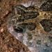 |
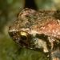 |
|||
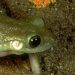 |
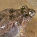 |
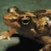 |
||
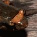 |
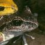 |
|||
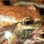 |
||||
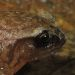 |
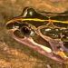 |
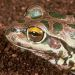 |
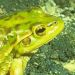 |
Australia is fortunate in having a wealth of variety in frogs, but for some unknown reason, frogs are disappearing at a rapid rate. There is a great deal of speculation as to why, but no definitive answers. This is cause for real sorrow, as many of our frogs are still largely unknown to us, and could be gone before we even knew they existed. As well, when we consider that 92% of our frogs are found nowhere else, it becomes cause for alarm and rapid, but considered, action.
As you will see, there are many frogs
that I have no information about.
If you can fill in the gaps please email me.
You may choose a thumbnail at random, or 'start' to begin a mini-tour of Australia's frogs. 'Back' will return you to this page, and 'Home' will take you to the main menu.
Please remember that I am not a biologist! and if you find mistakes don't hesitate to let me know so that I may correct them.
Reptiles People Animals Birds Insects
Scenery
Inhabitants Honorary
Aussies Links Awards Bio
Credits and things
Guestbook Home Write